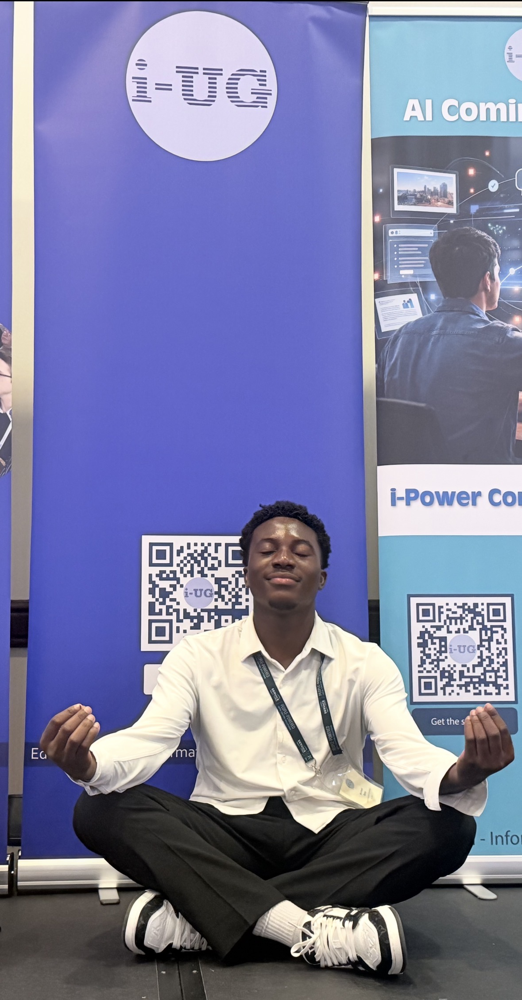

Building intelligent digital solutions.
Hi, I’m Osita Michael, a Computer Science student at Leeds Beckett University based in Leeds, United Kingdom. I’m passionate about software development, artificial intelligence, data analysis, and building practical systems that solve real-world problems.

About.
Technical Foundation
A motivated and detail-oriented developer with a strong foundation in artificial intelligence, data analysis, and software engineering.
Practical Experience
Experienced in building intelligent systems and developing real-world applications using modern programming tools and technologies.
Driven to Grow
Passionate about solving complex problems, creating efficient solutions, and improving expertise in machine learning and full-stack development.
Skills.
Languages
- Python
- Java
- JavaScript
- SQL
- C
Technologies
- Django
- HTML5 & CSS3
- SQLite
- Node-RED
- Raspberry Pi
Tools & Interests
- GitHub
- VS Code
- Eclipse & IntelliJ IDEA
- Machine Learning
- IoT Systems
Featured Projects.
Diabetes Prediction System
Developed a machine learning model to predict diabetes risk using real-world health data, data preprocessing, feature engineering, and classification modelling.
Wristband Detection & Location System
Built a prototype for tracking service-user movement with wristband detectors, Raspberry Pi, Node-RED, Django backend, APIs, and database storage.
Turtle Graphics Drawing System
Created an interactive Java OOP application that processes commands to draw shapes, circles, angles, and geometric patterns using LBUGraphics.
Django Database Management System
Developed a database-driven web application for storing and managing service-user information with Django admin, SQLite, and backend models.
Professional Portfolio Website
Designed and deployed a responsive personal portfolio website to showcase projects, technical skills, education, and development experience.
Education.
Leeds Beckett University
BSc (Hons) Computing / Software Engineering · 2024 – 2027
A rigorous programme covering software development principles, data structures, algorithms, AI fundamentals, database systems, and systems design.
Experience.
Junior Web Developer
May 2024 – June 2024
Developed and maintained web applications, improved functionality, debugged errors, worked with databases, and improved user experience.
IT Support Assistant
Oct 2025 – Dec 2025
Troubleshot hardware and software issues, installed and configured applications, supported users, and helped improve system reliability.
IoT Systems Developer
Feb 2026 – Apr 2026
Configured Node-RED on Raspberry Pi, connected sensors and smart devices, processed real-time data, and built dashboards for monitoring.
Career Objective.
To secure a challenging role in software development or AI engineering where I can apply my technical skills, contribute to impactful projects, and grow professionally within the technology industry.
Get in Touch.
Leeds, United Kingdom · Open to hybrid and remote roles